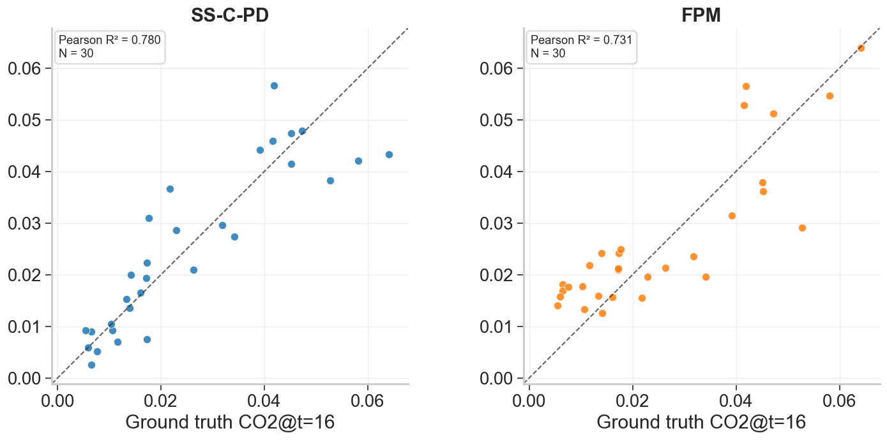

Section 5A: Physics Guided Enhancements
Constraints & Collocation Points
Overview
In this section, NODE-ED-Uncoupled, identified in Section 4A is further refined through the incorporation of physics-guided enhancements for CO2 prediction, as outlined in Table 5.1. The training procedure follows the methodology described in Section 4.5.
| NODE-ED-Uncoupled |
|---|
| Steady State Constraint with Parameter Discovery (SS-PD) |
| Steady State Collocation with Parameter Discovery (SS-C-PD) |
Steady State Constraint with Parameter Discovery (SS-PD)
To address the first hypothesis that NODE-ED-Uncoupled converges to an incorrect final state, SS-PD approach is employed. At final state, the system can be expressed using 3 algebraic equations (3 different zones mentioned in Section 2): h1 (SRZ), h2 (IRZ) , h3 (PAZ) without excessive simplifying assumptions. By incorporating the final-state constraint, the model is guided towards physically consistent end states, thereby potentially putting lesser emphasis on the noises in earlier time steps.
However, the final state governing equation contains mass transfer empirical parameters: K0GA, k0LA, kgA that are not directly measurable. To address this, a parameter discovery framework is adopted, wherein these parameters are treated as learnable variables and optimised during training.
To implement this, an additional loss term, referred to as the SS-PD loss, LSS-PD is incorporated alongside the existing MSE loss, LMSE , at time = 16 mins as defined below. The governing equations are described in Figure 5.1 and Table 5.2.
At time = 16 mins,


Given that heights of all zones = height of entire column = 42.5cm,

Steady State Collocation with Parameter Discovery (SS-C-PD)
To address the second hypothesis that NODE-ED-Uncoupled has limited experimental data to learn the full range of interactions of the zones, SS-C-PD approach is employed. Figure 5.2 showcases the training procedure of SS-C-PD.

In this approach, collocation points are generated across the same input space. The addition of collocation points can be viewed as a form of data augmentation, as it artificially expands the training dataset by introducing physics-consistent samples across the domain, improving model generalisation and ensuring better representation of under-sampled regions. Specifically, 2.500 points (arranged as a 50 x 50 grid) are sampled within the defined sample range to provide a dense representation of the zones at fine resolution. These generated inputs are then evaluated using the governing equation with parameter discovery described in Section 5.1 for SS-PD. During training, at every epoch, the model is evaluated on a randomly sampled mini-batch of 100 collocation points from the bulk 2,500 points to reduce computational costs. This stochastic sampling strategy progressively improves domain coverage, where certain zones are under-represented while preventing overfitting to a fixed set of collocation locations as shown in Figure 5.3.


Analysis of results for Physics Guided Enhancements
| Metric | Physics Guided Enhancement | NODE-ED-Uncoupled (Basecase) | |
|---|---|---|---|
| SS-PD | SS-C-PD | ||
| MSE | 0.239 ± 0.035 | 0.233 ± 0.0314 | 0.245 ± 0.034 |
| Model Pair | Metric | Significance Test | |
|---|---|---|---|
| Paired t-test | Cohen's d * | ||
| NODE-ED-Uncoupled Vs SS-PD | MSE | 5.14 x 10-3 | 0.286 |
| NODE-ED-Uncoupled Vs SS-C-PD | MSE | 3.96 x 10-8 | 0.596 |
Note: The sign of Cohen's d is defined with respect to the first model listed in each pair. Positive value indicates higher metric value for 1st model, negative value indicates a higher value for 2nd model
As shown in Table 5.3, SS-PD only achieved a marginal improvement over NODE-ED-Uncoupled, with a slightly lower mean MSE of 0.239 ± 0.035 against 0.245 ± 0.034. The statistical tests in Table 5.4 indicate that this reduction is statistically significant (p = 5.14 x 10-3), but the effect size is small (Cohen's d = 0.286), suggesting limited practical improvement.
Despite the minor reduction in MSE, the performance of SS-PD is practically still comparable to NODE-ED-Uncoupled. It was previously recognised that the NODE-ED-Uncoupled architecture exhibits inaccuracy in mapping the final state of the trajectory. While the incorporation of governing equations with a better prediction is expected to enhance predictive performance, this improvement is not observed. It is hypothesised that although the model may achieve a better fit at the final time point (t = 16), the trajectory leading to this state may exhibit increased discrepancies at earlier time steps. Consequently, these opposing effects offset one another, resulting in no significant overall improvement in model performance.
Meanwhile, the benefit of broader coverage from collocation points is reflected in the SS-C-PD results. The reduction in MSE is more pronounced, with SS-C-PD achieving 0.233 ± 0.0314 compared to 0.245 ± 0.034 for NODE-ED-Uncoupled. This improvement is supported by a statistically significant paired t-test (p = 3.96 x 10-8) and a moderate effect size (Cohen's d = 0.596). This progression from SS-PD to SS-C-PD therefore demonstrates that it is not the physics constraint itself that is limiting, but rather the narrow operating range over which the physics is applied to and that extending physics enhancement across the entirety of the operating space is able to produce meaningful generalisation improvement.
A possible explanation lies in the limited representation of the three distinct zones (SRZ, IRZ, and PAZ) occurring simultaneously within the column, which is captured in only 6 out of the 30 data points. The majority of the data instead reflects conditions where only one or two zones are present. Consequently, when evaluating test cases involving the coexistence of all three zones, the model exhibits poor predictive performance due to this underrepresentation. The introduction of collocation points addresses this limitation by enriching the dataset with the missing three regime information, thereby enabling improved model training and predictive capability.

Moreover as observed in Figure 5.4, at t =16 mins, the SS-C-PD model achieves a higher Coefficient of Determination (R2) of 0.780 compared to 0.731 for conventional FPM predictions, representing a 7% improvement and further substantiating its enhanced predictive capability over existing FPM benchmarks.